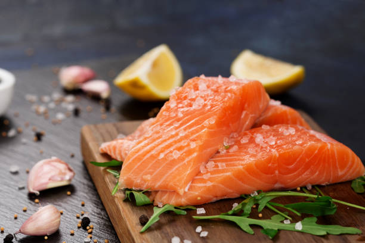

Meat Recipes

Eating a proper diet, based on regular consumption of beef and vegetables, is important at all stages of life. It strengthens the immune system for a better nutritional balance. We must consume foods with proteins and Beef impacts on the maintenance of muscle mass.
Meat recipe pageFish Recipes
There are several studies that have suggested that seafood/fish can help protect our lungs, boost night vision, protect the ageing process. it has high omega-3 fatty acis to help keep your eyes healthy and bright are just a couple of reasons you should eat more fish.
Fish recipe pageVegan Recipes

Sweet Simple Vegan is as lovely as its name suggests. Yes! by eating a wide variety of wholesome foods and vegetables, you can get all the nutrients your body needs. Beans, whole grains, vegetables, and fruits are packed with nutrients and many more.
Vegan recipe page